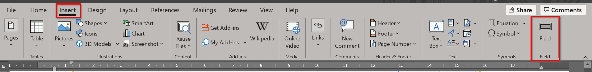

Dokumentu veidošana
Dokumentu veidnes
Dokumentu veidnes var klasificēt atsevišķās grupās reģistrā, ko var atrast meklētājā ierakstot nosaukumu Dokumentu veidņu grupas.
Sistēmā rīkojumiem, līgumiem, ziņojumiem ir iespējams izveidot dokumentu veidnes. Dokumentu veidņu veidošana ir aprakstīta sadaļā Dokumentu veidošana. Visas izveidotās dokumentu veidnes ir apkopotas sarakstā Dokumentu veidnes.
Uzstādījumi MS Word
Lai varētu izveidot dokumenta veidni Microsoft Word programmā, rīkjoslā ir jāuztaisa jauna poga Field. File ( ) – Options – Customize Ribbon () – zem Insert (
) – Options – Customize Ribbon () – zem Insert ( ) – kreisais peles taustiņš Add New Group – Nosauciet to par Field (
) – kreisais peles taustiņš Add New Group – Nosauciet to par Field ( ) – pievienot funkciju Field
) – pievienot funkciju Field
Dokumentā jau pievienota poga izskatās sekojoši:

Dokumentu lauki Business Central
Lai varētu izveidot veidni, sistēmā ir izveidoti nepieciešamie lauki, ko izmanto, lai aizpildītu mainīgos laukus lietotāja definētajā veidnē. Tabula Dokumentu lauki satur sekojošus laukus:
- Kods – lauka kods;
- Atsauce – tabula sistēmā, no kurienes tiek ņemta informācija;
- Apraksts – koda apraksts;
- Izmantojami locījumi – šo lauku var locīt visos locījumos;
- Locījuma dzimums – norādīts, kurā dzimumā tiek locīts lauks;
- Lauka vērtība – tiek norādīta lauka vērtība, kas jau ir aizpildīta rīkojumā.
Dokumentu lauki atrodas:
- Darbinieku kartiņās - pieejami Darbinieku kartiņā zem Naviģēt - Personāls;
- Darba līgumos - pieejami Darba līguma kartē zem Apstrāde. Darba līguma dokumenta laukos ir apkopoti pēc iespējas tie lauki, kuri būs nepieciešami veidojot darba līgumus un grozījumus – gan lauki no darbinieka kartiņas, gan lauki no darba līguma, gan arī lauki no darba līguma algas komponentēm un uzņēmuma informācijas;
- Amata rīkojumos - tā kā Amata rīkojums sastāv no divām daļām – virsraksta un rindām, tad attiecīgi katrai daļai ir savi dokumentu lauki. Virsraksta dokumentu laukus var atvērt rīkojuma kartiņā zem Apstrāde, bet Rindu laukus var atvērt Rindu cilnē zem Rinda;
- Personāla rīkojumos - tāpat kā Amata rīkojums, arī Personāla rīkojums sastāv no divām daļām – virsraksta un rindām, tad attiecīgi katrai daļai ir savi dokumentu lauki. Virsraksta dokumentu laukus ir iespējams atvērt rīkojuma kartiņā zem Apstrāde, bet Rindu laukus var atvērt Rindu cilnē zem Rinda, kas satur informāciju no Darbinieka kartes laukiem, Personāla rīkojuma rindas, ieskaitot Personāla rīkojuma algas komponentes, kā arī Uzņēmuma informācijas laukiem;
- Personāla dokumentos - pieejami sadaļā Apstrāde. Šeit ir apkopoti pēc iespējas tie lauki, kuri būs nepieciešami veidojot dažādus personāla dokumentus, piemēram, līgums par auto izmantošanu, līgums par mobilā telefona limitiem utt., – gan lauki no darbinieka kartiņas, gan lauki no darba līguma un tā algas komponentēm, gan lauki no amata rīkojuma virsraksta un rindām, personāla rīkojuma virsraksta un rindām, kā arī algas komponentēm, personāla dokumenta laukiem un uzņēmuma informācijas.
Veidņu veidošana
Dokumenta veidošana un lauku pievienošana, kas nav algu komponentes
Lai izveidotu veidni:
- Ir jāatver tukšs MS Word dokuments vai arī kāds dokumenta paraugs, ko vēlas izmantot kā veidni;
- Tajā vietā, kur nepieciešams, lai informācija aizpildās no sistēmas, definē lauku, piemēram, jāieliek lauks darbinieka pilns vārds:
- Noliek kursoru vai iezīmē tekstu, kas ir jānomaina uz nepieciešamo lauku;
- Nospiež uz iepriekš pievienotās pogas Field;
- Atveras sekojošs logs, kurā izvēlas no Field names DocVariable () un New name laukā ieraksta FULLNAME (), kas ir dokumenta lauka nosaukums, kas izsauks darbinieka pilnu vārdu:
- vairumu no laukiem var locīt. Lai to izdarītu, pirms lauka koda jāieraksta attiecīgā locījuma pirmais burts:
G – Ģenitīvs – kā?
D – Datīvs – kam?
A – Akuzatīvs – ko?
I – Instrumentāls – ar ko?
L – Lokatīvs – kur?
V – Vokatīvs - !
Pieminētā piemērā, piemēram, locījums akuzatīvā izskatīsies sekojoši:

- Pievienotais lauks pēc noklusējuma dokumentā būs neredzams, tāpēc lietotāja ērtībām, lai rediģētu dokumentu, var izmantot funkciju Toggle Field Codes, ko var izsaukt ar labo peles taustiņu nospiežot uz tās vietas, kur atrodas ieliktais lauks:

Parādās sekojoša lauka atšifrējums:
- Šādi turpināt, līdz ir nodefinēti visi dokumenta lauki.
- Izveidoto dokumentu saglabā Word Document(*.docx) formātā.
Algas komponentes lauku pievienošana
Algas komponentes dokumentā pievieno līdzīgi kā pārējos laukus, kas ir aprakstīts iepriekšējā sadaļā. Atšķirība ir lauka definēšanā. Visi algas komponentes dokumentu lauki satur nosaukumā "%1" zīmi, piemēram, darba līguma algas komponente – darba algas summa - LPC_%1_AMOUNT. %1*” vietā ir jāieraksta attiecīgais Dokumenta lauku ID, kas ir definēts algas komponentes tabulās, piemēram: Ir izveidots darba līgums ar sekojošu algas komponenti, kurai tika automātiski piešķirts Dokumenta lauku ID:
Tad definējums, kas būs jāieraksta MS Word failā būs sekojošs - LPC_101PC1_AMOUNT.
Tālāk tiek veiktas tās pašas darbības, kas aprakstītas iepriekšējā sadaļā, pievienojot laukus, kas nav algas komponentes.
Veidņu pievienošana Business Central sistēmai
Kad veidne ir izveidota, tā ir jāpievieno sistēmā, lai tālāk to varētu pievienot dažādiem notikumiem – Personāla rīkojumu veidošanā, Darba līgumu veidošanā utt.
Atver sarakstu Dokumentu veidnes. Zem sadaļas Veidne klikšķina uz pogas Importēt veidni. Izvēlas dokumentu, ko vēlas ieimportēt. Kad dokuments ir ieimportēts laukā Veidne pievienota iepildās ķeksis.